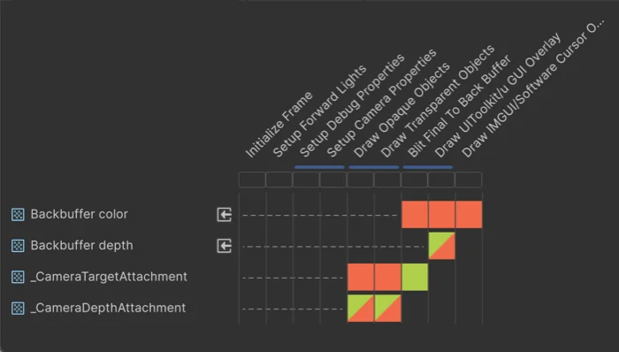

Configure the Universal Render Pipeline (URP) to simplify rendering and improve performance on embedded platforms.
Unity recommends the efficient and configurable Universal Render Pipeline (URP) for embedded platforms. By default, URP enables features that enhance visual quality but can be resource-intensive. On embedded platforms, you can adjust or disable these settings to achieve a minimal yet efficient setup.
Follow these steps to create a minimal rendering configuration and verify it with the Render Graph Viewer.
Use the same Quality settings on desktop as on embedded platforms during development:
You can remove the quality levels that you no longer need by unchecking the corresponding checkboxes in the Quality matrix.
This ensures that the desktop build uses the same default quality level as embedded platforms, indicated by the green check mark in the matrix.
Select the URP asset assigned to the quality level set for embedded platforms to view it the Inspector, then apply the following settings:
1.0.For optimal performance on embedded platforms, disable the Depth and Opaque Textures when not required:
To remove post-processing effects from the build, disable post-processing on the Renderer:
This excludes post-processing effects such as Bloom, Tonemapping, and Vignette from the build.
Important: If your project requires post-processing effects, the recommended best practice is to enable On-Tile Post Processing in the Renderer asset settings. On-Tile post processing optimizes performance on tile-based GPUs in embedded devices.
For more information, refer to Universal Renderer asset reference.
Select each camera used in the minimal setup to view it in the Inspector, then configure the following settings:
For more information on these settings, refer to Camera component reference.
To verify the setup:
The render graph displays only opaque, transparent, and UI draw passes with an optional skybox pass. The following image depicts the minimal URP configuration:

Note: URP’s default lit shaders are typically more resource-intensive than simpler alternatives. For better performance on embedded platforms, use unlit-type shaders or simple shaders whenever possible.